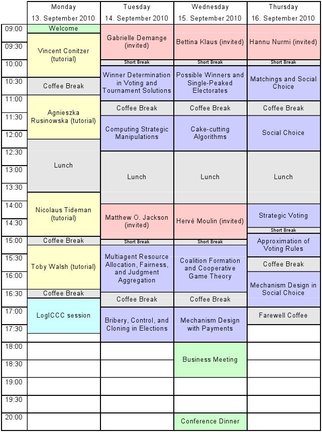

|
|
|
Program
Jump directly to Monday,
Tuesday,
Wednesday,
Thursday.
The COMSOC-2010 program consists of five invited talks and the presentation of 39 contributed papers,
which have been selected from amongst the 57 submissions received by the program committee.
In addition, there are four tutorials and three short talks in a special LogICCC session at the LogICCC Tutorial Day.
Registration: starting Monday 08:30
Social Dinner: Wednesday 20:00 (details)
Welcome: Monday 09:00-09:15
Each invited talk is 60 minutes long.
Contributed talks have been allocated 20 minutes each, including questions and change-over to the next speaker.
Here is a rough schedule of the program (see the full program for the exact time slots):

Monday, 13 September 2010
LogICCC Tutorial Day
| 9:00-9:15 Welcome (Registration: from 8:30 onwards) |
| 9:15-10:30 Introductory Tutorial (Chair: Jörg Rothe)
|
| 10:30-11:00 Coffee Break |
| 11:00-12:15 Invited Tutorial (Chair: Gabrielle Demange)
|
| 12:15-13:45 Lunch |
| 13:45-15:00 Invited Tutorial (Chair: Hannu Nurmi)
|
| 15:00-15:15 Coffee Break |
| 15:15-16:30 Invited Tutorial (Chair: Mike Fellows)
|
| 16:30-16:45 Coffee Break |
| 16:45-17:45 LogICCC session (Chair: Arkadii Slinko)
|
Tuesday, 14 September 2010
| 9:00-10:00 Invited Talk (Chair: Jörg Rothe)
|
| 10:00-10:10 Short Break |
| 10:10-11:10 Winner Determination in Voting and Tournament Solutions
(Chair: Toby Walsh)
|
| 11:10-11:35 Coffee Break |
| 11:35-12:35 Computing Strategic Manipulations
(Chair: Jérôme Lang)
|
| 12:35-14:05 Lunch |
| 14:05-15:05 Invited Talk (Chair: Vincent Conitzer)
|
| 15:05-15:15 Short Break |
| 15:15-16:35 Multiagent Resource Allocation, Fairness, and
Judgment Aggregation
(Chair: Matthew O. Jackson)
|
| 16:35-17:00 Coffee Break |
| 17:00-18:00 Bribery, Control, and Cloning in Elections
(Chair: Fran Rosamond)
|
Wednesday, 15 September 2010
| 9:00-10:00 Invited Talk (Chair: Hervé Moulin)
|
| 10:00-10:10 Short Break |
| 10:10-11:10 Possible Winners and Single-Peaked Electorates
(Chair: Piotr Faliszewski)
|
| 11:10-11:35 Coffee Break |
| 11:35-12:35 Cake-cutting Algorithms
(Chair: Ulle Endriss)
|
| 12:35-14:05 Lunch |
| 14:05-15:05 Invited Talk (Chair: Ariel Procaccia)
|
| 15:05-15:15 Short Break |
| 15:15-16:35 Coalition Formation and Cooperative Game Theory
(Chair: Edith Elkind)
|
| 16:35-17:00 Coffee Break |
| 17:00-18:00 Mechanism Design with Payments
(Chair: Remzi Sanver)
|
| 18:00-19:00 Business Meeting |
| 20:00- Conference Dinner at the Rheinturm |
Thursday, 16 September 2010
| 9:00-10:00 Invited Talk (Chair: Felix Brandt)
|
| 10:00-10:10 Short Break |
| 10:10-11:10 Matchings and Social Choice
(Chair: Bettina Klaus)
|
| 11:10-11:35 Coffee Break |
| 11:35-12:35 Social Choice
(Chair: Jean-François Laslier)
|
| 12:35-14:05 Lunch |
| 14:05-14:45 Strategic Voting
(Chair: Arkadii Slinko)
|
| 14:45-14:55 Short Break |
| 14:55-15:35 Approximation of Voting Rules
(Chair: Brent Venable)
|
| 15:35-16:00 Coffee Break |
| 16:00-17:00 Mechanism Design in Social Choice
(Chair: Francesca Rossi)
|
| 17:00-17:30 Farewell Coffee |
|